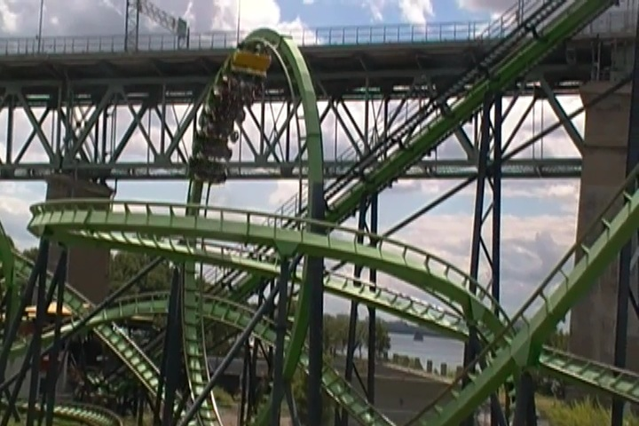
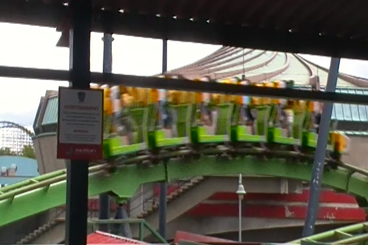
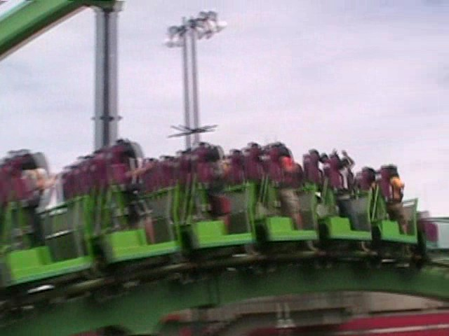
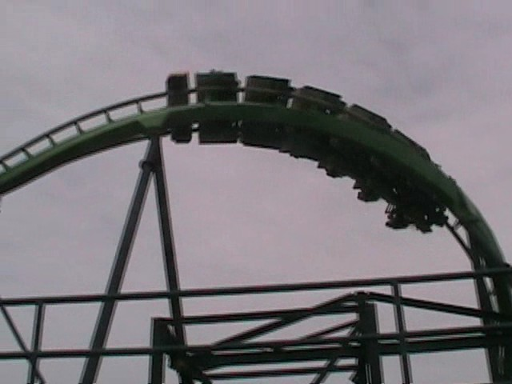
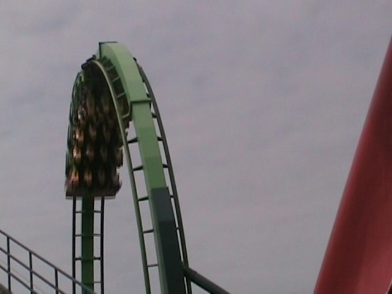
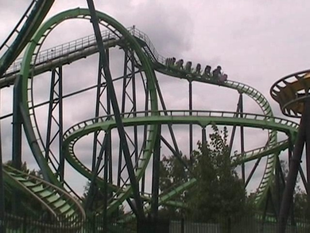
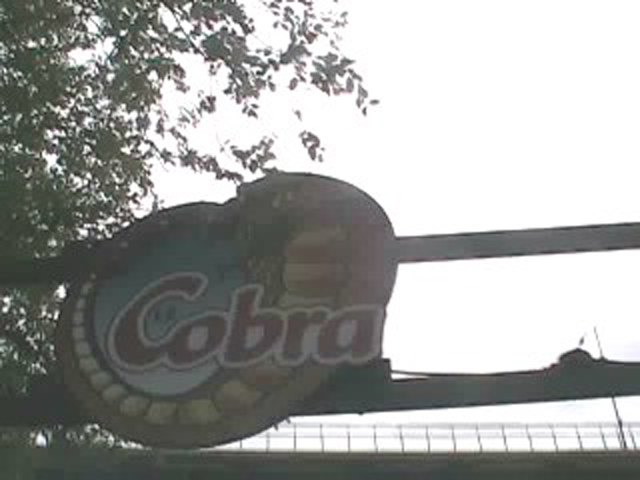

| |

Cobra Review

For today's review, we're going back in time so we can review Cobra @ La Ronde. This was the parks stand up coaster, but despite the bad reputation it got from other enthusiasts, it was actually a really fun ride. So it's very sad knowing that they tore down Cobra. =( You straddled the seat to a comfortable setting, got the restraint right, and then left the station! As we climbed the lifthill, we got a good view of Cobra's loop if we looked to our right, and in the front row, you could clearly see the St. Lawrence River. Then, we crested the lifthill. And down the first drop we went. We twisted down and gained quite a bit of speed. While it didn't look all that fast from off the ride, it's actually going at a decent speed. Up next would've been the loop. It was a pretty good loop. You got some good forces in that loop. And there was no leg pain during it at all. Still going fast, we twisted up and spiraled up towards the sky. But before we knew it, we were literally diving straight towards the ground. It had really steep banking and was really tight. So just that really steep dive was just awesome. Now I will admit that there was a little bit of headbanging here. So that was a bummer and a deduction since there was no headbanging here in 2008. But it's not that big of a deal. There are FAR WORSE rides out there with much worse headbanging that don't come with any fun like this. Anyways, back to this awesome dive. It was awesome, and the fact that you were standing up during it is even better. And then after that, we were traveling pretty fast and had a small hill ahead of us. You know what that means. EJECTOR AIRTIME!!!!! =) We braced for the testicular pain that everyone commonly associates with airtime on a stand up coaster. Ejector Air on a stand up coaster is one of the best feelings you get on a coaster. There's not much quite like it (Someone please build a stand up version of Coaster please)! We then landed back in our seat. And guess what? Our balls are perfectly unharmed! All those "This ride hurts my balls" rumors are 100% bullsh*t! Stand Up Airtime kicks ass! Someone please build a stand up coaster with a sh*tload of ejector air please. We then twisted back up, and then roared straight into the midcourse brakes. You know those coasters where the first half is really good, but the second half is even better? Well Cobra was not that type of coaster. =( Cause really, after the mid course brakes, Cobra kind of sucked. We headed down a drop, and while we were still moving, we wern't going nearly as strong as we were in the first half. We soared through a turn, before heading through some sort of curvy trick track and switching directions and turning the other way. You got some good laterals during this, but unfortunetly, the second half is all downhill from here. We then started to curve up and then just kept turning. We just keep turning, just keep turning, it's like a flat helix, except we don't really feel a change in elevation. We then twisted down a drop as we kept turning. We then went through an S Turn as we changed direction. We saw another small hill and started to get our hopes up for more ejector air. But nope. We just glided over this hill, feet flat on the ground. =( After a banked curve, we rolled straight into the brake run. This is a decent stand up and while far from my favorite stand up coaster, it's also far from my least favorite stand up coaster. It really saddens me that this ride is gone, as well as the fact that other coaster enthusiasts didn't really like this ride. It was CRIMINALLY underrated. I would've TOTALLY recommend riding as it's not only a really fun ride, but it was pretty rare back when it was still alive. Now with Cobra gone, Shockwave at Drayton Manor, is the only Intamin Stand-Up left. It has a completely different layout, so I can't compare (really hope to ride that ride sometime soon). R.I.P Cobra. You were much better than people claimed.
7/10
Location: La Ronde
Opened at Skara Summerland in 1988
Moved to La Ronde in 1995
Built by: Intamin
Last Ridden: August 2, 2011
Cobra Photos







Home
|